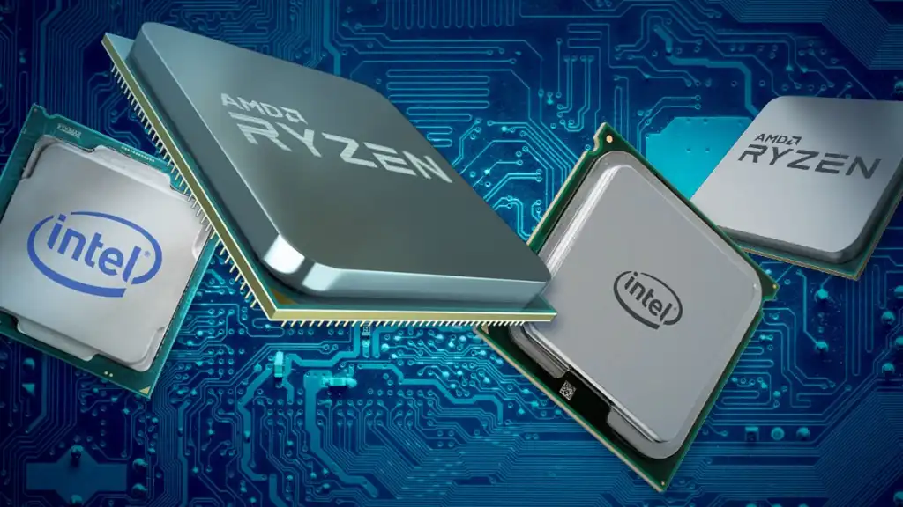

wawawa
Processors
Graphic Cards
A graphics card, also known as a video card or GPU (graphics processing unit), is a specialized circuit board designed to handle the processing and rendering of visual data for display on a computer monitor or other output device. The graphics card is responsible for performing a variety of tasks related to graphics rendering, including geometry processing, texture mapping, lighting calculations, and shading. These tasks require a great deal of computational power, and graphics cards are designed with specialized hardware to accelerate these operations. Modern graphics cards often include dedicated memory, called VRAM (video random access memory), which is used to store and manipulate large amounts of graphical data. They may also feature multiple cores or processing units, allowing them to handle multiple tasks simultaneously. The performance of a graphics card can have a significant impact on the quality and speed of visual applications like gaming, video editing, and 3D modeling. As a result, graphics cards are a critical component in many high-end computer systems, and are a key area of development and innovation in the computer hardware industry.
Operating Systems
An operating system (OS) is a software program that manages the hardware and software resources of a computer system. It provides a common platform for computer programs to run on, and manages the allocation of resources like memory, processing power, and storage. The operating system provides a user interface that allows users to interact with the computer and its resources. This can include graphical interfaces like desktop environments or command-line interfaces that allow users to enter commands and perform tasks. The OS is responsible for managing the system's security, including user access control and protection against malware and other threats. It also handles system updates and maintenance tasks like file management, backup and recovery, and device driver updates. There are many types of operating systems, including popular options like Microsoft Windows, Apple macOS, and Linux. Each operating system has its own unique features, capabilities, and limitations, and may be optimized for specific types of hardware or software applications. The choice of operating system can have a significant impact on the overall functionality and performance of a computer system.
Click here to open the 2nd page (processors)